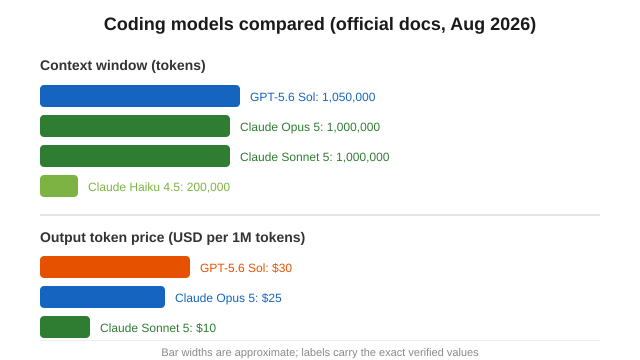

Claude vs ChatGPT for Coding (2026): Context, IDE Tools, and Costs
The short version
TL;DR: For serious coding, Claude (Claude Code) and ChatGPT (Codex) are both capable by late 2026, but they reward different workflows. Claude's current models (Opus 5, Sonnet 5) carry a 1 million token context window and Claude Code ships with every paid Claude plan, which makes long, multi-file edits feel natural. ChatGPT's GPT-5.6 family is cheaper per token at the flagship tier and its tools are stitched into editors and its desktop app. I would not trust anyone who gives you a single benchmark number here, because results swing wildly depending on model version and task. Pick by how you work, not by a leaderboard.This is a coding-specific follow-up to our general ChatGPT vs Claude guide. Everything below was checked against the official OpenAI and Anthropic documentation and pricing pages in August 2026. Model names change fast, so treat any model detail as a snapshot.
Which one is actually better for coding?
There is no clean winner. The honest answer is that Claude leans on context and depth, while ChatGPT leans on breadth of integration and per-token price. If your work is "reason through a messy existing codebase and make surgical changes across many files," Claude is the smoother fit. If your work is "bounce between an editor, a browser, and a shell, with an assistant that plugs into all of them," ChatGPT is hard to beat.
When to pick Claude: You get the biggest context window on the models built for heavy edits. Anthropic's own docs position Claude Opus 5 for "complex agentic coding," and its models carry up to a 1 million token context window (Anthropic model docs), which is roughly 555,000 words. That matters when you paste in an entire repository's key files rather than fragments.
When to pick ChatGPT: You want the assistant inside your existing tooling. GPT-5.6 Sol carries a 1,050,000 token context window, comparable to Claude's, and OpenAI documents it explicitly as the flagship for "complex reasoning and coding" (OpenAI model docs). It also runs at a lower per-token cost than Claude's top model, which adds up fast on agent-heavy workloads.
How do context windows compare for real codebases?
| Flag | Context window | Max output | Input price per 1M tokens | Output price per 1M tokens |
|---|---|---|---|---|
| Claude Opus 5 | 1M tokens (~555k words) | 128k tokens | $5 | $25 |
| Claude Sonnet 5 | 1M tokens | 128k tokens | $2 | $10 |
| Claude Haiku 4.5 | 200k tokens (~150k words) | 64k tokens | $1 | $5 |
| GPT-5.6 Sol | 1,050,000 tokens | 128k tokens | $5 | $30 |
Sources: Anthropic model docs and OpenAI model docs, both retrieved August 2026. A larger window is not automatically better, but it is the main reason Claude feels coherent on multi-file changes.
How does each one integrate with your editor or terminal?
Anthropic's agentic coding tool is Claude Code, and it is included with every paid Claude plan, from the $20 Pro tier up. That is unusual: most coding agents charge separately. It runs in your terminal and plugs into editors, and it can open files, edit, run tests, and loop on failures.
OpenAI's equivalent is Codex, part of ChatGPT. ChatGPT already reaches into many tools through connectors, and in August 2026 OpenAI shipped a dedicated ChatGPT desktop app for Linux, which matters if you are a developer who lives on Linux rather than macOS. Across the two, the real question is where you already spend your day. If your workflow is terminal-heavy and you want an agent that reads your whole project, Claude Code in the terminal is the cleaner fit. If you want the assistant inside the same app you use for research and planning, ChatGPT is more central to your seat.
Does pricing actually change the coding math?
Yes, and mostly on the API side, which is what you pay for when a coding agent burns tokens across many iterations. At the top end, Claude's most capable model costs $5 per million input tokens and $25 per million output tokens. ChatGPT's flagship is $5 in and $30 out. So top-model output is about 20% pricier on ChatGPT, while the mid Claude model (Sonnet 5) is the cheapest of the group at $2 in and $10 out.
What matters more than the per-token price is the plan you already hold. Claude bundles Claude Code into Pro ($20/month) and Max (from $100/month). ChatGPT does not gate its coding agent behind a separate add-on either, but its consumer plans step up from the $8 Go tier through Plus at $20 and Pro at $100, with Business and Enterprise for teams.
What do real-world reviews miss?
Most comparisons lean on benchmark scores that change whenever either company ships a new model. A score from March is meaningless in August, and it is probably testing a different model than the one you get today. What does not change as fast is the workflow: how deep the context goes, how the agent calls tools, how the pricing scales with your iteration count. Those are the facts worth comparing, and they are the ones I verified above.
One honest caveat: developers disagree sharply about which feels faster or more reliable, and both tools occasionally stall or burn through rate limits on long runs. If you are a professional, the only real test is your own repo and your own prompt habits. Run the same refactor task on both before you commit to a plan.
Recap: how to choose
- Confirm you want an agent at all; for quick snippets, either free tier is fine and the difference is small.
- If your job is multi-file refactors on an unfamiliar codebase, start with Claude and its 1M context plus Claude Code on the $20 Pro plan.
- If you live in the ChatGPT ecosystem, on Linux, or want the cheapest top-tier output, start with ChatGPT Pro or Plus and Codex.
- Budget for the API if an agent runs unattended for hours; compare per-token rates, not just the flat plan.
- Run the same real task on both before paying for a year of either.
FAQ
Is Claude better than ChatGPT for writing code?
For long, multi-file edits, Claude's 1 million token context and bundled Claude Code give it an edge on depth. For cost and integration breadth, ChatGPT is strong. Neither is strictly "better"; it depends on your workload.
Do I have to pay extra for Claude Code?
No. Anthropic includes Claude Code with every paid Claude plan, from Pro at $20/month up through Max. It is not a separate charge.
What is the context window difference between Claude and ChatGPT for coding?
Claude Opus 5 and Sonnet 5 offer 1M tokens, and Claude Haiku 4.5 offers 200k. ChatGPT's GPT-5.6 Sol offers 1,050,000 tokens. They are broadly comparable at the top end.
Which is cheaper to run as a coding agent?
Per the official API pricing, Claude Opus 5 is $5 in / $25 out per million tokens, GPT-5.6 Sol is $5 in / $30 out, and Claude Sonnet 5 is $2 in / $10 out. Cheapest overall is Claude Sonnet 5; at the flagship level, Claude's output is slightly cheaper than ChatGPT's.
Will a better coding model be released soon?
Very likely. Both OpenAI and Anthropic ship new model versions on a regular cadence, and model names change within a year. Re-check the official docs before you renew a long subscription.

Disclosure: We are an independent review site. Links to software in this article are affiliate links; if you buy through them we may earn a commission at no extra cost to you. We only recommend tools we have actually evaluated for the audience in question.